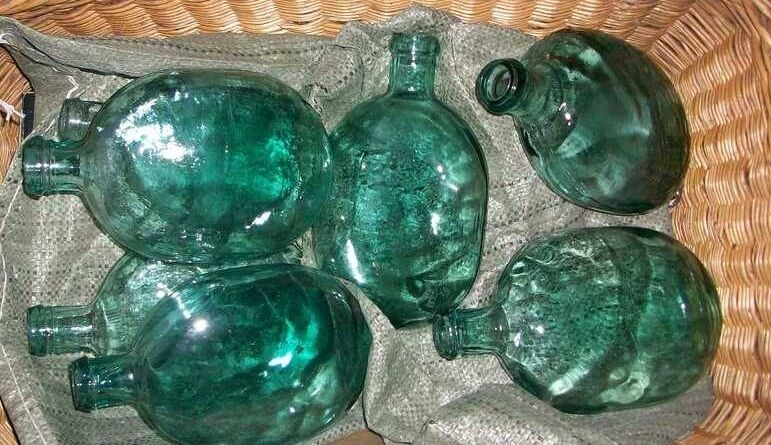
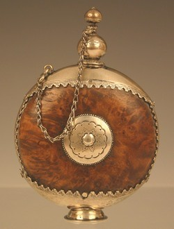
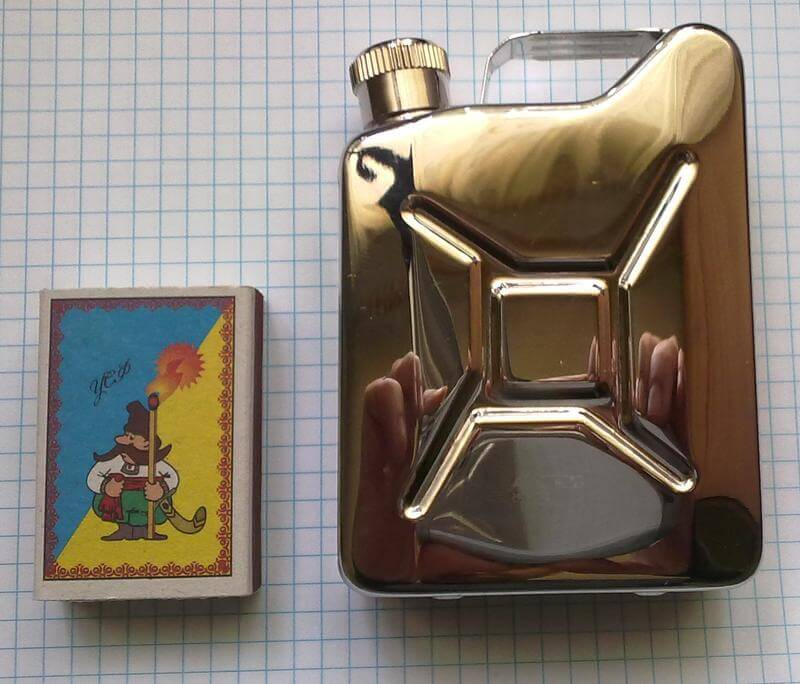
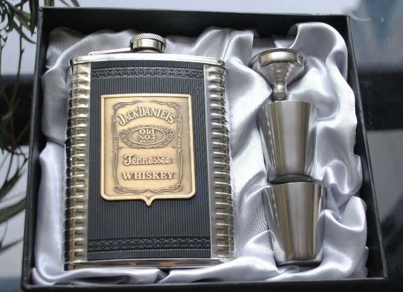
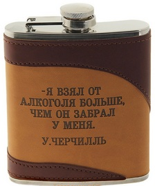

«Праздник, который всегда с тобой!»: немного о фляжках для алкоголя
Сегодня мы будем говорить о фляжках: из чего и как изготавливаются эти штуки, каких объемов бывают, как лучше выбрать фляжку, что в нее наливать, как ухаживать. Также вспомним несколько основных правил «фляжечного этикета» и сделаем небольшой экскурс в историю.
«Портативный бар», «боевые 100 грамм», «жидкость для растопки» – как только не называют в народе фляжку. Небольшая ёмкость с драгоценными каплями спиртного – обязательная деталь экипировки любого алкогольного эстета. Куда бы ты ни отправился: на рыбалку, в турпоход, на собеседование, в театр – свой личный штофчик в кармане сделает тебя независимым от баров и магазинов, даст возможность в любой момент снять стресс, согреться, настроится на позитив, расслабиться. Не стоит забывать и о том, что фляжка – это показатель стиля, пафосный атрибут. Короче – «Ты можешь хоть вообще не пить, но фляжкой обладать обязан!».
Сегодня мы будем говорить о фляжках: из чего и как изготавливаются эти штуки, каких объемов бывают, как лучше выбрать фляжку, что в нее наливать, как ухаживать. Также вспомним несколько основных правил «фляжечного этикета» и сделаем небольшой экскурс в историю.
Само слово «фляга» немецкое, образовано от «Flachmann», что в переводе значит всего лишь «колба». «Фляхманы» использовали, в основном, солдаты – во время I мировой они делались из стекла и одевались в матерчатый чехол. Бились, поди, аж бегом – только представьте, сколько шнапса было пролито на полях сражений кайзеровскими войсками!
Но, конечно же, ёмкости алкогольных веществ появились задолго до Империалистической. Кожа, вычиненные желудки скота, дерево, скорлупа некоторых плодов (напр. кокоса) – из всего этого делали переносные «бутылки» для вина и других напитков со времен их появления. Современный вид фляжка начала приобретать, предположительно, в восемнадцатом веке, в старой-доброй Франции.  Именно в это время фляга вышла из разряда практичного повседневного предмета и перенеслась в плоскость элемента дизайна, даже роскоши.Серебро, золото, шикарный орнамент, инкрустация из самоцветов, фамильные гербы, гравюры, иконы – тому подтверждение.
Роскошная старинная фляга, инкрустированная деревом и золотомИ только в прошлом столетии фляжка стала широко использоваться не только знатными бездельниками, но и простым людом. Главный скачок популярности этого девайса случился в Штатах, в 1920-е годы. Во время «великой засухи» алкоголь можно было продавать только из-под полы.Кто-то из будущих Аль Капоне придумал особый тип наливаек, известных как «заправочные станции». Смысл прост – жаждущий промочить горло рабочий заходит в некое заведение. Пить на месте не разрешалось из соображений секретности – бутлегер наливал только «с собой». Желающему заправиться был нужен «бензобак», вернее «бачок», который можно было спрятать в карман или за голенище и бережно оттранспортировать в безопасное место. После отмены сомнительной Восемнадцатой поправки фляжки так и остались частью быта простых американцев. Их, например, часто находили на телах солдат США, погибших на фронтах II мировой. Брали их и в Корею, и во Вьетнам. Должно быть, именно оттуда удобный и полезный предмет проник на просторы СССР.
Много лет назад, купив свою самую первую фляжку, я все удивлялся, что ёмкость на ней обозначена не в миллилитрах, а в каких-то загадочных «OZ». На самом деле тут нет ничего удивительного – американцы измеряют объем алкоголя в унциях, равных 29 с мелочью мл – как раз небольшой шотик. Минимальный объем обычно – 3 унции, максимальный – 12. Но бывают и исключения. Например – миниатюрные фляжечки-брелоки. У моего товарища дядя работал на каком-то загадочном фляжечном производстве – так у него все, от постного масла до самогона хранилось в мастадонтских 3-5-литровых фляжищах.
Выбор объема – личное дело каждого. Мне нравится 9 OZ – 255 грамм. Как раз хватит коньячка, чтобы слегка расслабиться и угостить приятеля. Меньшая, 6-унциевая фляжка пригодится в походе – в нее можно налить 98-% спирт, который сгодится и чтоб костер по сырости разжечь, и рану продезинфицировать, и компанию из- 2-3 взрослых мужиков подпоить. Только учтите – долго алкоголь, особенно крепкий (спирт, абсент, неразбавленные настойки) не стоит хранить в металлической ёмкости – есть риск, что напиток изменит вкус, станет «железным». И, кстати, еще один лайфхак – «для сугреву» гораздо лучше подходит не бренди или водка, а крепкое вино – мадера, портвейн, кагор. Проверено на практике – в своё время много приходилось работать по морозу. От вина становится теплее без ущерба для соображалки. А для снятия стресса рекомендуется принимать не более 50 мл, особенно в экстремальных условиях – в походе и т.п., где важно сохранять ловкость и ясность мысли.
Теперь о материале. Как уже говорилось, делают фляги из чего попало – даже из стекла и полимеров. Мы остановимся на металлах.
И еще – стоит обратить внимание на аксессуары к флягам. Для некоторых фляг делают пробки-рюмки – может быть, вам так удобнее пить, но я думаю, что пробка должна быть прикреплена к корпусу на шарнире – иначе она 100% потеряется. Если не любите эффектно выпивать из горла – лучше приобрести набор металлических стопочек в отдельном чехольчике. Берите потолще – они быстро гнутся. А вот леечка – штука очень полезная, особенно когда переливаешь остатки бухла во фляжку с утра после пьянки. В специальных чехлах лично я смысла не вижу – разве что, кроме фляжки в него помещается, например, кисет или портсигар.
Только чистый алкоголь, только хардкор! Любите «Cuba libre»? Носите с собой ром, а остальное – смешивайте в стакане. Согласитесь, «кровавая Мери» во фляге – это не совсем эстетично, да и негигиенично.
Угощать малознакомых персонажей из собственной фляги – дурной вкус. Альтернатива – переносные рюмочки.
 Да и вообще – флягу надо держать в чистоте, тщательно вымывая каждый раз после того, как она опорожнена. Говорят, сэр Черчилль всегда носил с собой фляжечку любимого армянского коньякаВ свободное от переноски алкоголя время фляга должна хранится чистой и высушенной. Изнутри ее нельзя мыть мылом или средством – только обычная теплая вода. В крайнем случае, если внутри хранился какой-то уж больно ароматный или сладкий, жирный напиток – можно использовать лимонную кислоту или слабый раствор уксуса, после чего ёмкость нужно снова несколько раз ополоснуть и хорошо высушить с открученной крышкой. Также можно помыть фляжку… рисом! Рис – хороший адсорбент, он отлично впитывает запахи и привкусы. Немного зерен нужно засыпать внутрь, добавить теплой воды и дать полчасика отстояться, после чего хорошенько промыть сосуд. Снаружи простую металлическую или инкрустированную деревом флягу можно помыть мылом или нейтральным посудным средством. Для кожи сойдут обычные обувные средства, только те, которые не пахнут. Олово можно натереть смесью уксуса, муки и соли, дать смеси засохнуть на поверхности и смыть теплой водой. Также обязательно несколько раз промыть новую фляжку сразу после покупки, после чего высушить и залить водкой или другим алкоголем, которого не жалко. Если за пару дней напиток не поменял вкус и запах – значит, вы приобрели хороший сосуд! Вот и всё!
| Компания Men's Throne предлагает заказать фляжки прямо сейчас. Качество и хороший ассортимент Вас приятно впечатлят: | ||
| Номер фляжки | Материал | Стоимость, в грн |
| Фляжка N1 | Аллюминий | 1500 |